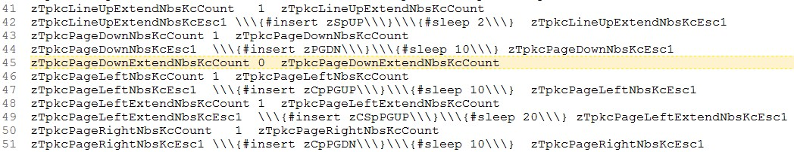

[BACK]
Your TPKC user-specific command-configuration (or "user-spcfc-cmd-cfg") is where you manage and configure your Non-BootStrap key-commands (nbs-kcs). User-spcfc-cmd-cfg does not exist until after TPKC user-build-process 1-of-2 is complete and its output imported.
User-specific command-configuration is different for every user, reflecting their particular installation of TextPad. It is complemented by the TPKC global-command-configuration, which is the same for all users.
Contents:
[GO] Assigning a new key-command via user-command-configuration: Step-by-step[GO] Phrase and file locations (documented elsewhere)Key:
[name] is the value of zTpkc[abrv]CmdNameTC[abrv] is the value of zTpkc[name]Abrv1C[top] TPKC user-specific config: zzTpkc[name]NbsKcCountzzTpkcFileCloseNbsKcCountThe number of Non-BootStrap key-commands (nbs-kcs) assigned to this built-in TextPad command. Must be an integer zero or greater. For every number above zero, there must be a corresponding zzTpkc[name]NbsKcEsc# variable. For example, if
zzTpkcFileCloseNbsKcCount
is 3, then the following must exist:
zzTpkcFileCloseNbsKcEsc1zzTpkcFileCloseNbsKcEsc2zzTpkcFileCloseNbsKcEsc3zzTpkcFileCloseNbsKcCount is '0', then all zzTpkcFileCloseNbsKcEsc# variables are ignored--and should not exist.
[top] TPKC user-specific config: zzTpkc[name]NbsKcEsc#zzTpkcFileCloseNbsKcEsc1\\\{#CTRL \\\{#F12\\\}\\\}\\\{#sleep 25\\\}\\\{#insert zCpF9\\\}\\\{#sleep 100\\\}The specific key-command that triggers (should trigger) the command. There must be one of these variables for every number that zzTpkc[name]NbsKcCount is above zero.
The value must
zTSlp. This implies that, in the case of multi-key-press key-commands, the last key-press only should be an x-key-presses. All previous key-presses should be a raw PhraseExpress key-presseszTpkcMillsBtwMultiKeyKCs for more information.It must also end with a minimal amount of sleep, so that PhraseExpress does not continue until the command has finished executing. This should be an amount satisfactory for most situations. For extreme situations, append extra sleep after calling it. For example:
{#insert zTPCopy}{#sleep 50}
Note that the default amount of post-kc sleep milliseconds is defined by the XBNPE global-config-var
zTpkc[cmd-abrv]DfltPostKcSlpMils
[top -- PREV / NEXT] Assigning a new key-command via user-command-configuration: Step-by-stepThis section describes how to install a TextPad command...
As an example, these instructions assign the command
Cursor > PageDown
to this key-command
zCpPGDN
which is the is the x-key-press equivalent of the TextPad key-press
Ctrl+Pgdown
Further, this section also assumes that there is already one key-command assigned to it:
zPGDN
[back -- PREV / NEXT] Assigning a new key-command via user-command-configuration: Step-by-stepThe first step is to actually assign the key-command in TextPad. Go to
Textpad > Configure > Preferences > Keyboard > Categories > "Cursor" > Commands > "PageDown"
and type the key-command into the "Press new shortcut key" field.
[back -- PREV / NEXT] Assigning a new key-command via user-command-configuration: Step-by-stepPress the [Assign] button. Now the key-command is listed in the "Current keys" list-box. To commit this change, press the [OK] button, which also dismisses the Preferences dialog. (To commit this change to the Windows registry, close and then re-open TextPad.)
[back -- PREV / NEXT] Assigning a new key-command via user-command-configuration: Step-by-stepIn TextPad, open the user-specific command-config file (the phrase-file) that contains the PageDown command. This particular command is in the "cursor" category:
{#insert zXPROOT_DIR_tpkcUsrCfgUserBase_M_tudn}output\user_spcfc_cfg__bldproc10thr13\cursor.px.txt
(The PageDown command is about half way down the file.)
Notes:

[back -- PREV / NEXT] Assigning a new key-command via user-command-configuration: Step-by-stepIncrement the command's "Non-BootStrap" key-command (nbs-kc) count variable from
zTpkcPageDownNbsKcCount 1 zTpkcPageDownNbsKcCount
to
zTpkcPageDownNbsKcCount 2 zTpkcPageDownNbsKcCount
And create its new nbs-key-command phrase:
zTpkcPageDownNbsKcEsc2 \\\{#insert zCpPGDN\\\}\\\{#sleep 10\\\} zTpkcPageDownNbsKcEsc2
The convenience utility (xhtk)
newnbskc
can create this phrase for you (replace "XXX" with the escaped key-command). Note that the default post-kc milliseconds is automatically printed. Feel free to change it.
Warning: newnbskc will only work if the TextPad built-in command
Cursor > CharLeftExtend
(zTPSelectL1c) has already been assigned a key-command.
[back -- PREV / NEXT] Assigning a new key-command via user-command-configuration: Step-by-stepImport the phrase-file(s) containing the new key-command(s) to their proper location, and then execute the necessary build-process(es):
Need to do a full refresh from your TextPad all-cmd-list?
If a command's primary key-command was changed (added, changed, or deleted), then TPKC user-build-process 2-of-2 must be run again, in order to re-create its nbs-phrase. To run this process for all categories, execute (via the TPKC-user-menu):
TextPad built-in commands (TPKC) project >
z-User-build processes >
TPKC user-build process TWO of 2: **All**
To run it for specific categories only, execute
z-User-build processes >
User-build 2/2: Nbs-phrases only w/ cat-prompts
and then (if a command was added or deleted, as discussed in the next section):
z-User-build processes >
User-build 2/2: TP-phrase-creator-ddmenu only
After any of these build-processes are run, its output must be imported
Only if a command was added or deleted. Meaning
zTpkc*NbsKcCount) was one, and is now zero (or was zero, and is now one).xh phrase-creator ddmenu. It is therefore strongly recommended that this process be run when necessary.